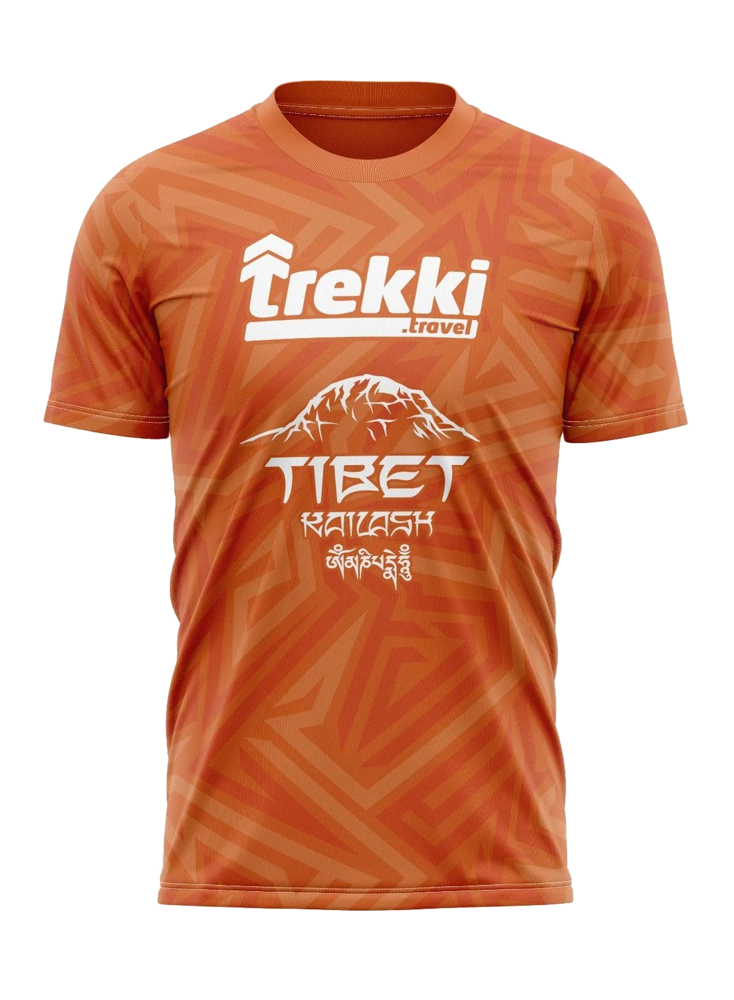

Лёгкая посадка
Для забегов, тренировок и летних мероприятий, где важны воздух, влагоотведение и свобода движения.
Лёгкая спортивная база для забегов, тренировок, корпоративных команд и мерча после поездки. Подбираем ткань, посадку и способ для принта под задачу.

Футболка может быть не просто сувениром: она работает как спортивная форма, командный знак и память о маршруте, старте или клубе.
Футболка лучше всего подходит, когда нужна лёгкая форма на тёплую погоду, старт, тренировку или повседневный мерч команды.
Для забегов, тренировок и летних мероприятий, где важны воздух, влагоотведение и свобода движения.
Футболка быстро собирает группу визуально: логотип, маршрут, название клуба, номер старта или корпоративный знак.
Подходит как памятная вещь после похода, забега или выезда, особенно если принт связан с реальной историей события.
Футболки могут быть спортивными или ближе к мерчу. От этого зависят ткань, принт, посадка и итоговая стоимость.
| Вопрос | Зачем нужен | Что прислать |
|---|---|---|
| Тираж | Помогает оценить сроки, бюджет и вариант изготовления. | Минимально работаем от 5 штук, можно указать примерную вилку. |
| Сценарий носки | Для спорта и мерча нужны разные ткани и способы для принта. | Опишите, это забег, клубная форма, подарок участникам или повседневный мерч. |
| Дизайн | Нужно понять, будет ли полноцветный принт или небольшой логотип. | Логотип, референс, цвета команды, старый мерч или описание идеи. |
| Размеры | Посадка влияет на комфорт и внешний вид команды. | Откройте сетку футболок, выберите размеры по A, B и рукаву или пришлите количество по размерам. |